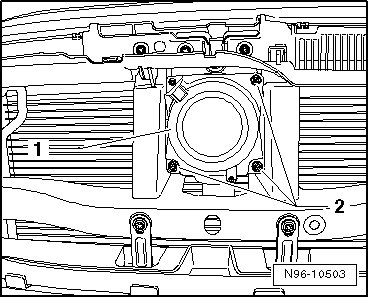
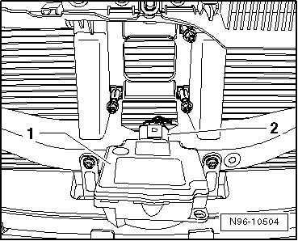

Distance Regulation Control Module
Distance Regulation Control Module
Distance Regulation Control Module (J428) is mounted on front of vehicle, behind VW-logo in the radiator protective grille.
Distance Regulation Control Module (J428) must not be disassembled further and contains the following components:
• Adaptive Cruise Control Sensor (G550)
• Distance Regulation Sensor Heater (Z47)
Removing
- Switch off ignition, switch off all electrical consumers and remove ignition key.
- Remove radiator grille --> Body Exterior 66 Removal and Installation.
- Unclip Distance Regulation Control Module (J428) - 1 - from the three mounts - 2 -.

- Swivel Distance Regulation Control Module (J428) - 1 - forward, paying attention to lengths of connected wires.
- Disengage and disconnect harness connector - 2 - and remove Distance Regulation Control Module (J428) from vehicle.

Installing
Install in reverse order of removal, noting the following:
Adaptive Cruise Control Sensor (G550) in Distance Regulation Control Module (J428) is to be calibrated after:
• every removal and installation, and replacement of Adaptive Cruise Control Sensor (G550),
• every removal and installation, and replacement of assembly carrier,
• if there is a suspicion of forceful impact on these two parts, an accident during driving or similar.
Distance Regulation Sensor (G550), calibrating --> [ Adaptive Cruise Control Sensor, Calibrating ] Adaptive Cruise Control Sensor, Calibrating.
- When first commissioning or replacing Distance Regulation Control Module (J428), initialize ADR --> [ Adaptive Cruise Control, Initializing ] Adaptive Cruise Control, Initializing.